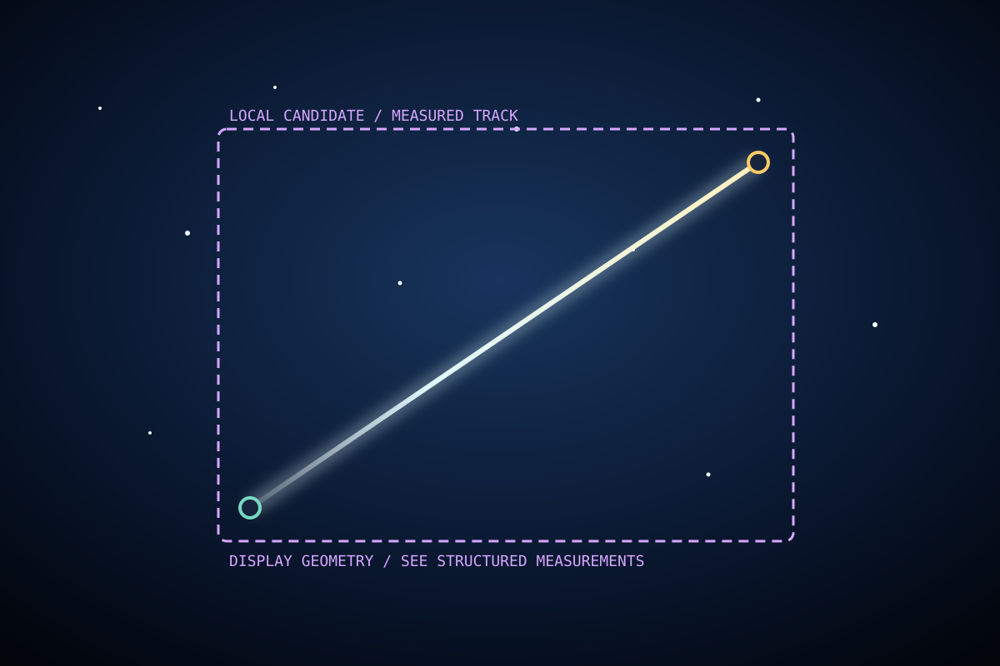

Local provisional / Night
Meteor-like track
Observed 10:17:08-10:17:10 PM HST
Candidate summary
Measured locally
- Classification
- Meteor-like
- Confidence
- 87%
- Duration
- 1.8 sec
- Track length
- 738 px
- Period
- Night
- State
- Provisional
This classification is an automated local assessment. It may change after authoritative review outside this CameraAgent.